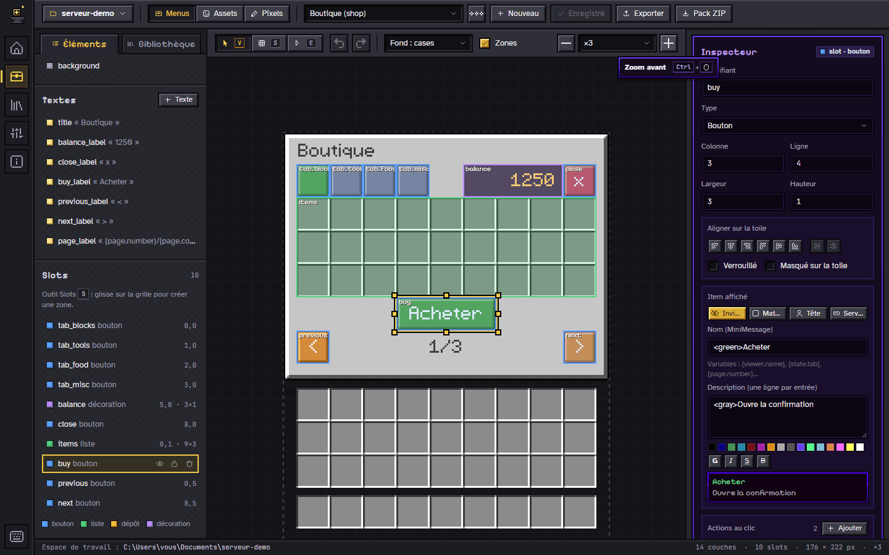
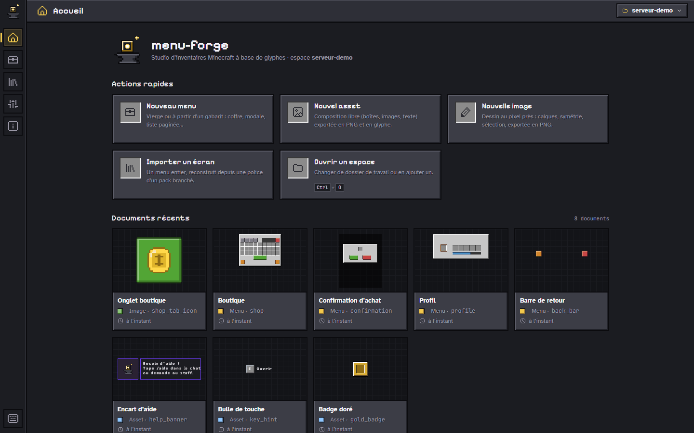
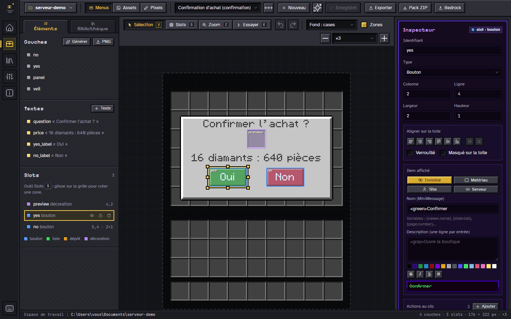
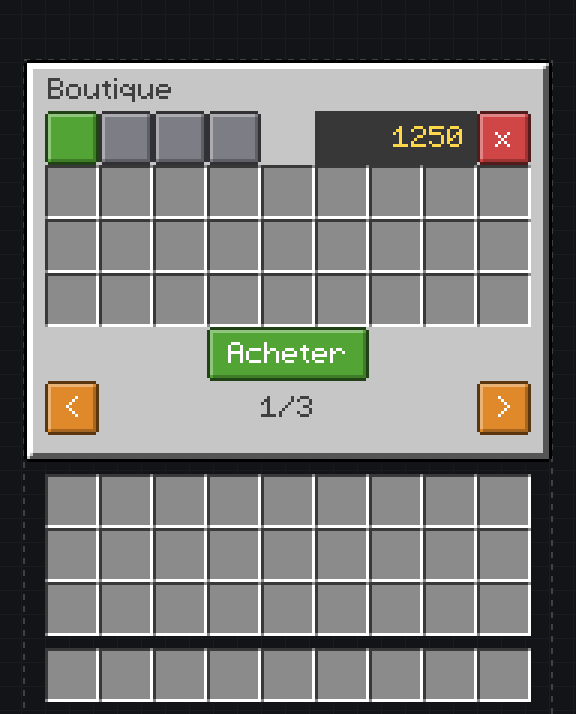
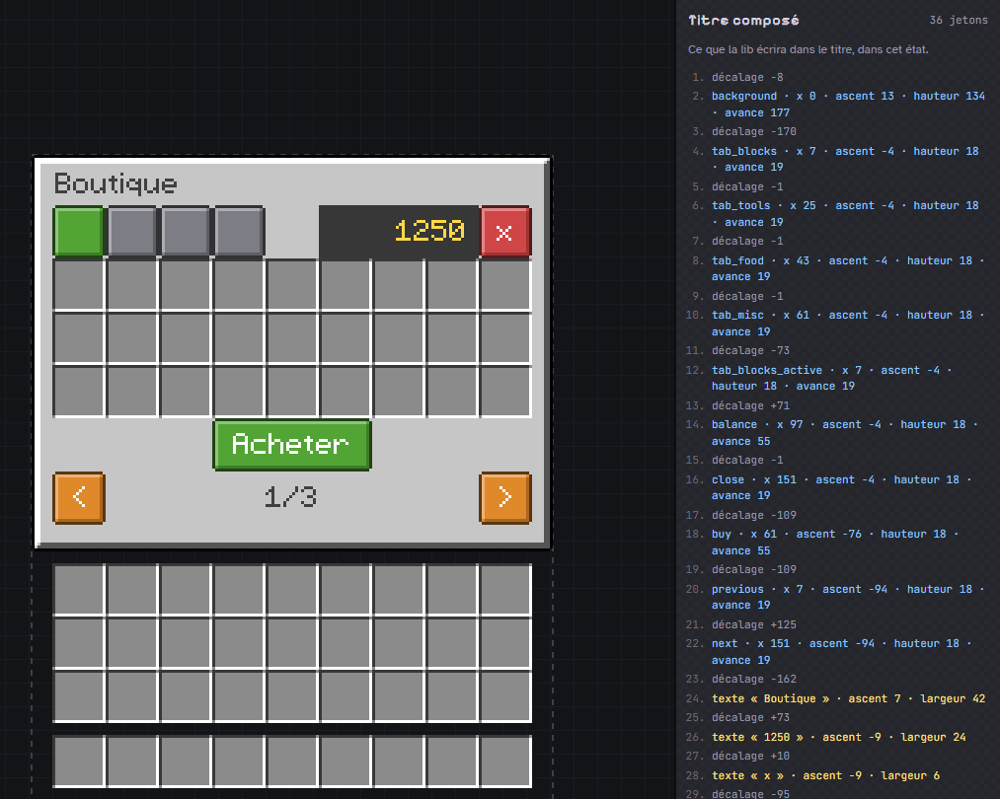
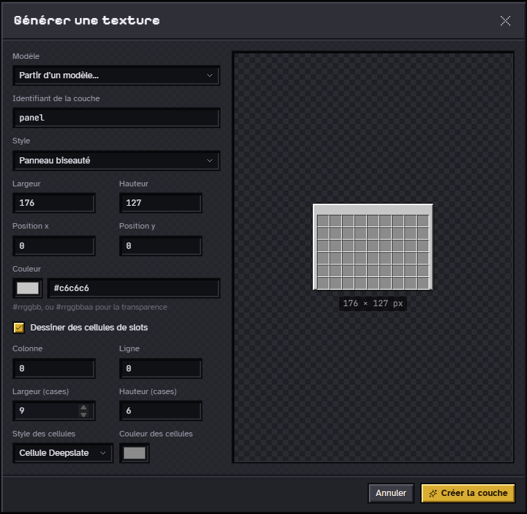
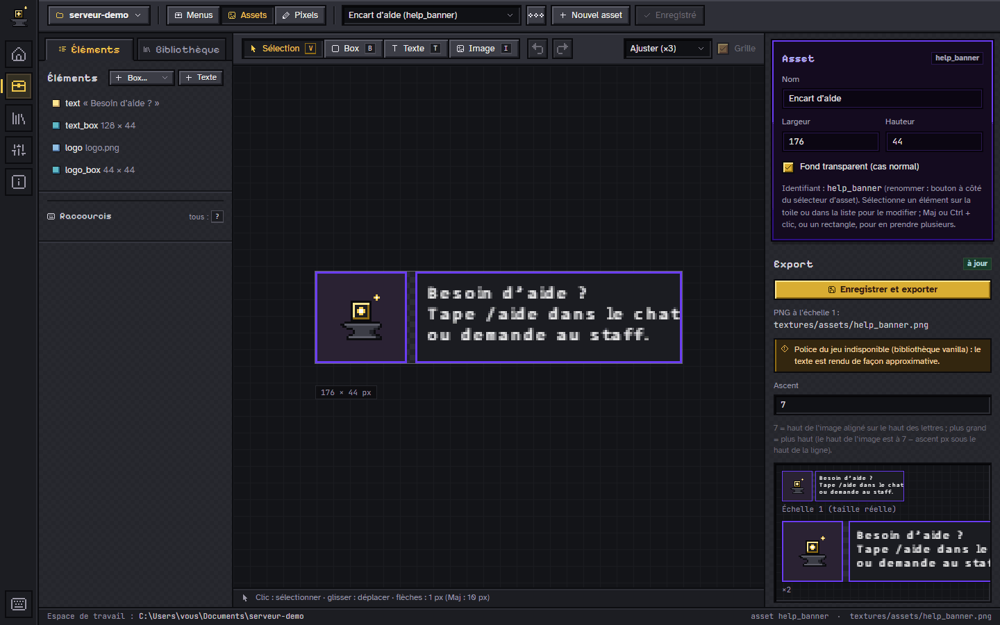
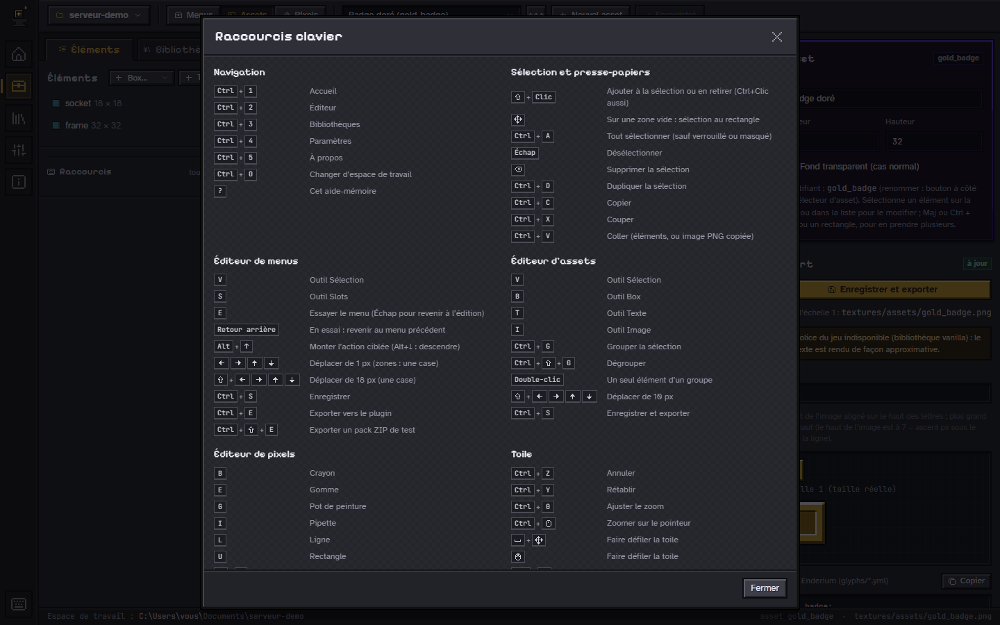
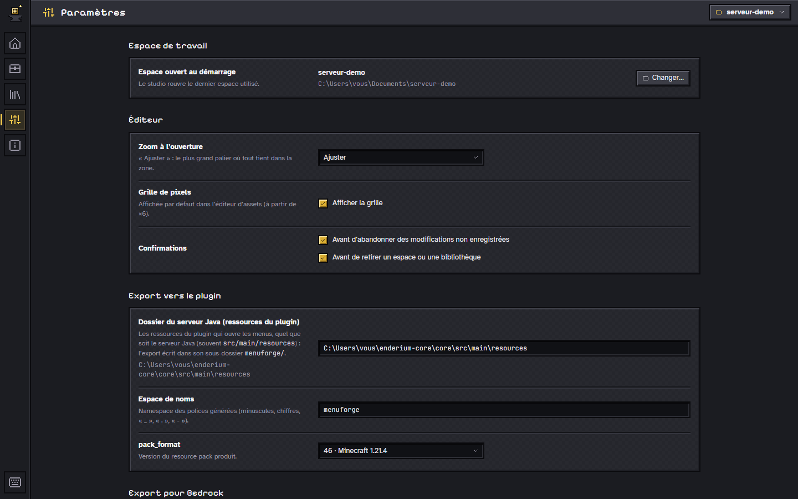

Pixel-exact canvas
Snapped to the slot grid, over a "slots only" or vanilla chest background, with zoom and snapping.
Minecraft inventory studio
menu-forge is a local studio for drawing custom Minecraft inventories—tabs, modals, colored buttons, paginated lists—and a Paper library that opens them in game. You draw; the studio composes the chest title, glyph by glyph, without a single offset computed by hand.
Young project under active development: no published release yet, build from source.

Everything it takes to make a vanilla chest look like a real mod interface, without ever opening a font editor or counting pixels by hand.
Snapped to the slot grid, over a "slots only" or vanilla chest background, with zoom and snapping.
Beveled panels, buttons, cells, veils and flat fills at the right size—no PNG to draw to get started.
Variables ({viewer.name}, {page.number}…) aligned left, center or right, measured with the game's own advances.
Buttons, paginated lists, inputs, decorations; on click: open, go back, change state, play a sound, run a command.
Tabs, pages, flags: every layer and every slot can depend on the state, with a preview of each case.
The studio shows, token by token, what the library will write into the title—using the same algorithm.
Callouts, key hints, badges: assets exported as PNG and as a glyph, ready to drop into any text.
Tools, moves by the pixel or by the slot, undo / redo, zoom: everything has a shortcut, and ? lists them.
The MenuForge plugin handles sessions, pagination and actions, generates the pack fonts and opens up to your server through an API. Born for Enderium, it works with any Paper server.
Screenshots produced by a script, on a demo workspace made only of textures generated by the studio. The studio's interface is in French. Click to enlarge; the arrow keys move between screenshots.

Home Quick actions and recent documents, with thumbnails.
Modal Veil, centered panel and buttons wired to actions.
As in game Areas hidden, the menu above the inventory.
Composed title Every offset, every glyph, every text.
Generator A beveled panel and its cells, in a few fields.
Free mode A help callout exported as PNG and as a glyph.
Shortcuts The cheat sheet, opened with the "?" key.
Settings Workspace, editor, export to the plugin.The "modern" menus on servers are not mods: they are vanilla chests whose title contains images. menu-forge takes care of the whole chain.
In the studio, from a template: layers, texts, slot areas, states and actions.
A *.menu.json file and its PNGs—readable, versionable, documented.
The library generates the pack fonts and opens the menu in a vanilla chest, with its slots and actions.
The chest texture is replaced by a "slots only" image: the frame disappears, the slot cells stay. Everything else is written into the chest's title, with a font where every character is an image.
For each visible layer, a negative or positive space moves the cursor to the right x position, then
the layer's glyph is drawn at the height set by its ascent. The catch: Minecraft then
advances by the image's last opaque column plus two, not by its width. menu-forge crops every layer
and measures that advance from the pixels, in the studio as in the library.
ascent = 13 − yputs the top of the image at y
advance = last opaque column + 2not the PNG's width
Slots remain real slots, and the title is drawn below the items: a button is a layer plus a slot at the same place, usually holding an invisible item.
Read the full rendering model, measured and validated in game (in French)
The shop's title
The first tokens, as the studio shows them (in French).
No published release yet: build from source. Requirements: Node 24, Rust stable (1.95 or later), WebView2 on Windows (bundled with Windows 11) and a JDK 21 for the library.
The studio in its own window (Tauri 2), with a native folder picker and a Windows installer.
git clone https://github.com/pedrokarim/menu-forge.git
cd menu-forge/studio
npm install
npm run tauri:buildThe installer is written to studio/src-tauri/target/release/bundle/nsis/.
The same studio, served locally—handy for development and testing.
cd menu-forge/studio
npm install
npm run devThen open http://localhost:5173. The server only listens locally and rejects other origins.
MenuForge reads the exported menus, generates the pack fonts and opens the menus in game. Paper 1.20.6 and later, Java 21.
cd menu-forge/lib
./gradlew build
Drop MenuForge-<version>.jar into plugins/, the menus into
plugins/MenuForge/workspace/, then merge the generated pack into your server's pack.
The documentation lives in the repository, next to the code it describes. It is written in French.
ascent, advance, known pitfalls.
| Component | Use | License |
|---|---|---|
| Pixelarticons | Icons | MIT |
| Pixelify Sans | Headings | SIL Open Font License 1.1 |
| Atkinson Hyperlegible | Body text | SIL Open Font License 1.1 |
| JetBrains Mono | Code and paths | SIL Open Font License 1.1 |
| React | Studio interface | MIT |
| Tauri | Desktop app | MIT or Apache 2.0 |
| Gson | Format parsing (library) | Apache 2.0 |
Project license: menu-forge is released under the MIT license, © 2026 Karim (pedrokarim). The third-party components above keep their own licenses.
menu-forge is not affiliated with or endorsed by Mojang; Minecraft is a trademark of Mojang AB. The repository contains no Minecraft asset: the game font and third-party packs are only read from the user's machine and remain the property of their authors.
The screenshots on this site are produced on a demo workspace made only of textures generated by the studio. Fonts are self-hosted with their licenses; this site loads nothing from any other domain and sets no cookies.
{kind=link}
{kind=link}
{kind=link}
{kind=link}
{kind=link}
{kind=link}
{kind=link}
{kind=link}
{kind=link}